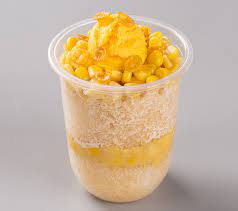

Mais con Yelo

What is Mais con Yelo
Filipino Mais Con Yelo is a delicious and refreshing summer treat!
This layered dessert consists of sweet corn, sweetened shaved ice,
and corn flake cereal topped with homemade corn ice cream.
Ingredients:
- Kernel Corns
- Shaved Ice
- Evaporated Milk
- Condensed Milk
- Leche Flan
Steps:
- Put shaved ice in a glass
- Pour evaporated milk on it
- Put generous amount of kernel corns
- Put leche flan on top
Back to Main Page